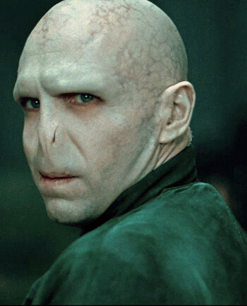

|
|
|
Lord Voldemort Tom Sorvolo Ryddle (31 de diciembre de 1926[10] – 2 de mayo de 1998), posteriormente conocido como Lord Voldemort, fue el mago tenebroso más poderoso de todos los tiempos. Siendo hijo del adinerado muggle Tom Ryddle Sr. y la bruja Merope Gaunt, nació con sangre mestiza, su madre murió poco después de dar a luz. Tom Ryddle Sr. dejó a su esposa una vez que ella quedó encinta, habiéndose librado del trance de una poción de amor, la cual había sido la única causa de su relación. Su hijo, Tom Ryddle, nació y fue criado en un orfanato muggle, aunque no tardó en ingresar al Colegio Hogwarts de Magia y Hechicería e incorporarse a la casa Slytherin en 1938. Tom Ryddle fue durante su vida temprana considerado el alumno más talentoso que jamás hubiera asistido a Hogwarts. Para el colegio en general, él parecía ser un joven de muchos modales y educación; sin embargo, Ryddle en realidad exhibía conductas de crueldad, sadismo, manipulación, sociopatía y megalomanía. Tras haber adquirido títulos de excelencia en cada prueba académica presentada, Ryddle se marchó de Hogwarts en 1945 y poco después intentó pedirle empleo al profesor Dippet, quien se lo negó. Después de eso trabajó en Borgin y Burkes y luego desapareció totalmente de la vista pública por un largo tiempo. Al haber adoptado las enseñanzas de las Artes Oscuras que descubrió en sus viajes, Tom Ryddle, ahora conocido exclusivamente bajo el nombre de Lord Voldemort, organizó un ejército enorme compuesto de seguidores que reclutó tanto en su periodo de formación como después de éste, así como de muchas criaturas mágicas con tenebrosos propósitos. Este ejército, conocido como los Mortífagos aunque en sus principios se les denominaba "Caballeros de Walpurgis", dio inicio a una campaña sin precedentes de terror y violencia por toda Gran Bretaña. Este creciente conocimiento tenebroso, fue empleado por Voldemort para dividir su alma en ocho partes distintas, depositando siete en diversos objetos y conservando una, de este modo volviéndose prácticamente inmortal. Tras escuchar solo la mitad de una profecía referente a un solo ser que tendría el poder de destruirlo, Voldemort se aventuró a dar muerte al niño Harry Potter, de quien creía que la profecía hacía alución. Después de asesinar a los padres del niño, James y Lily Potter, Voldemort apuntó su varita al joven Harry. Sin embargo, debido al sacrificio de amor de Lily Potter, magia ancestral, la maldición de Voldemort fue desviada hacia él de regreso y como resultado su cuerpo fue destruido. Despojado de su poder, Voldemort huyó a un bosque desierto en Albania para esperar el día en que pudiera poseer un cuerpo y recuperar su poder. Tras trece años de esperar el día que ansiaba llegar, y con el uso de la sangre del mismo Potter, el Señor Tenebroso ascendió de nuevo. Aunque al principio permaneció oculto, Voldemort no tardó en revelarse, comenzando una sangrienta reconquista del mundo mágico. Después de dos años de guerra constante, Voldemort finalmente obtuvo el control del Ministerio de Magia, y gobernó casi sin enfrentar resistencia, salvo por algunos grupos opositores. A pesar de haber tomado el país, Voldemort seguía insatisfecho, ya que debía eliminar el peligro que la profecía significaba para él. Tras descubrir la ubicación de Potter, Voldemort se aventuró a definitivamente destruir al joven lanzando todas sus fuerzas en un asalto a Hogwarts. Al llegar al colegio, Voldemort enfrentó una rebelión a gran escala compuesta de educadores y estudiantes, así como miembros de la Orden del Fénix y residentes de Hogsmeade. Conforme la batalla se intensificaba, los Mortífagos se vieron obligados a retirarse al Gran Comedor, lugar en el que Voldemort confrontó a Harry Potter en un duelo, y, como todos sus Horrocruxes habían sido destruidos, Tom Sorvolo Ryddle fue finalmente muerto. El alma mutilada de Tom Ryddle fue confinada en un limbo por toda la eternidad, sin poder moverse o regresar como fantasma. Durante toda la saga, a pesar de ser el antagonista principal, se le ha descrito como un personaje ridículo y temeroso de la muerte hasta el extremo, llegando a inspirar, más que miedo, lástima. |
| Hecho por Antonio Jesús Luque Parlón (Todos los derechos reservados por COPYRIGHT) |